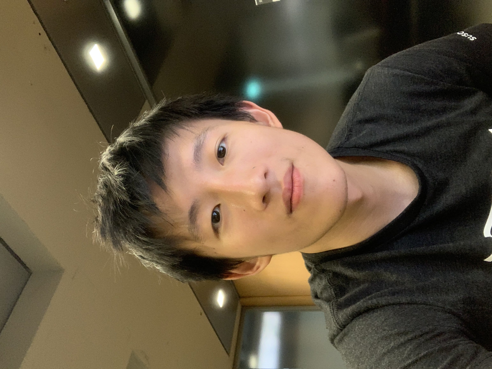

I am a PhD student in Genomics & Computational Biology at the University of Pennsylvania. I recently graduated from Penn with a B.S. in Statistics & Data Science and M.S. in Computer Science.
I am most excited about using simulation to design molecules and understand their physical interactions. I hope to develop machine learning methods that make accurate simulations feasible over biologically meaningful timescales, with applications in protein engineering and drug discovery.
Research
2026
Undergraduate thesis
2025
2022
International Journal of Molecular Sciences
Teaching
2025-2026
Thoughts
2026
Biology's bitter lesson